Laporan Praktikum 9 - Pemrograman Web
Laravel UI Bootstrap & Templating
Studi Kasus: Sistem Informasi Sekolah
IF - Universitas Andalas
A. Pendahuluan
Laravel dan Composer
Pembuatan project baru Laravel dapat dilakukan menggunakan Composer, yang merupakan program manajemen dependensi pada PHP. Perintah pembuatannya dapat menggunakan eksekusi langsung dari installer global Laravel maupun melalui eksekusi perintah pembuatan project dari Composer.
Authentication (Laravel UI)
Laravel menyediakan scaffolding untuk mempercepat pembuatan sistem otentikasi pengguna. Melalui package laravel/ui, fitur otentikasi dapat secara otomatis men-generate controller (seperti LoginController dan RegisterController), model, view berbasis framework Bootstrap, dan route yang dibutuhkan.
Migration dan Seeder
Migration digunakan untuk memodifikasi struktur tabel di dalam database (seperti menambah field username, level, dan status pada tabel users) secara sistematis melalui kode program tanpa harus mengubahnya langsung lewat SQL.
Seeder digunakan untuk untuk mengisi database dengan data awal (seeding), contohnya pada praktikum ini men-generate akun "Admin Aplikasi" secara otomatis saat perintah seeder dijalankan.
Blade Templating
Blade adalah templating engine bawaan Laravel yang mempermudah pengaturan layout web. Dalam praktikum ini, layout utama dipecah menjadi beberapa bagian (seperti sidebar dan topbar) yang dipanggil menggunakan perintah @include. View lain dapat mengambil kerangka dari layout utama dengan perintah @extends, lalu mengisi kontennya menggunakan @section dan menampilkannya di layout global dengan @yield.
Resource Controller
Resource Controller adalah controller khusus di Laravel yang digunakan untuk menangani seluruh request operasi CRUD (tambah, tampil, ubah, hapus) dalam satu perintah pembuatan. Dengan controller ini, pemetaan route untuk action seperti index, create, store, edit, update, dan destroy langsung terbentuk secara otomatis.
Studi Kasus: Sistem Informasi Sekolah
Praktikum ini akan membangun sebuah sistem informasi sekolah sederhana dengan fitur otentikasi pengguna dan manajemen data siswa. Melalui implementasi Laravel UI untuk authentication, penggunaan migration dan seeder untuk struktur dan data awal database, serta Blade templating untuk layout yang modular.
B. Tujuan Praktikum
Setelah menyelesaikan praktikum ini, mahasiswa diharapkan mampu:
- Memahami konsep Templating/Layouting dalam Laravel.
- Menginstal dan menerapkan fitur authentication (login dan register) bawaan menggunakan package laravel/ui dan Bootstrap.
- Memodifikasi struktur tabel pengguna dengan Migration dan menginisialisasi data awal menggunakan Seeder.
- Menerapkan Blade Templating untuk mengintegrasikan template antarmuka SB Admin 2 secara modular.
- Membangun fitur CRUD (Manajemen Pengguna) secara terpusat menggunakan Resource Controller.
C. Langkah-langkah Praktikum
Ada beberapa cara yang dapat digunakan untuk membuat project baru Laravel yaitu dengan cara install installer Laravel secara globat atau install menggunakan composer. Disini kita akan install menggunakan composer.
Pertama buat folder / workspace terlebih dahulu didalam folder htdocs, dengan nama Laravel.
Selanjutnya buka terminal / command prompt / cmder dan masuk kedalam workspace (C:\xampp\htdocs\laravel). Setelah masuk kedalam workspace ketikkan perintah berikut untuk melakukan installasi.
composer create-project laravel/laravel laravel-sisfo --prefer-dist

Untuk menjalankan project Laravel yang telah dibuat, buka terminal dan masuk kedalam folder project (C:\xampp\htdocs\laravel\laravel-sisfo). Kemudian jalankan perintah berikut:
php artisan serve
Buka file .env dan sesuaikan konfigurasi database dengan gambar berikut ini.

User authentication pada studi kasus ini menggunakan fitur authentication bawaan Laravel.
Install package Laravel/ui buka terminal kemudian ketikkan perintah berikut ini.
composer require laravel/ui

Setelah package berhasil diinstall, jalankan perintah berikut untuk menggenerate scaffolding authentication:
php artisan ui bootstrap --auth

Kemudian jalankan perintah berikut untuk menginstall dan compile file-file asset bawaan
npm install
npm run dev
Dengan perintah diatas maka file-file yang dibutuhkan untuk authentication akan di generate secara otomatis, seperti halaman login, register dan forgot password, selain itu juga akan di generate controller auth seperti gambar berikut.

Selain controller juga degenerate view untuk authenctication seperti gambar berikut.

Jalankan perintah berikut di terminal untuk membuat file migration table authentication.
php artisan migrate
Jika sebelumnya belum terdapat database maka aka nada konfirmasi dari larevel apakah akan dibuatkan databasenya atau tidak. Jika migaration berhasil maka akan tampil seperti tampilan berikut.

Jika instalasi berhasil maka aplikasi sisfo sudah memiliki fitur authentication bawaan dari Laravel, berikut tampilan fitur authentication dari Laravel.
Setelah semua file migration berhasil dibuat dan disesuaikan, akses url http://127.0.0.1:8000/login pada browser maka akan tampil halaman login seperti berikut.
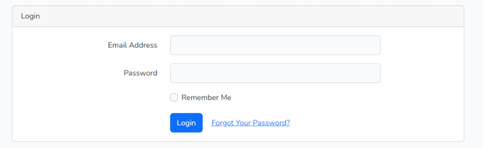
Untuk menampilkan halaman register, akses url http://127.0.0.1:8000/register pada browser maka akan tampil halaman register seperti berikut.

Selanjutnya silahkan coba registrasi dan lakukan login ke aplikasi disini saya registrasi dengan nama Ibraa, Berikut tampilan nya jika berhasil registrasi.

Fitur authentication Laravel akan mengenerate controller, model, view dan route authentication secara otomatis, selain itu juga tampilan view sudah menggunakan framework boostrap sehingga mempermudah dalam membuat fitur authentication pada aplikasi.
Authentication Laravel secara otomatis akan mengenerate table Users yang berisi tentang informasi data user, berikut struktur table users.

Dari stuktur table users diatas maka perlu ditambahken beberapa field yaitu username, level dan status, maka perlu membuat sebuah migration untuk menambahkan field-field diatas, ketikkan perintah berikut pada terminal
php artisan make:migration costum_table_users
Selanjutnya buka folder database/migrations/, kemudian bukan file yang diakhiri costum_table_users.php dan isikan dengan kode program berikut.
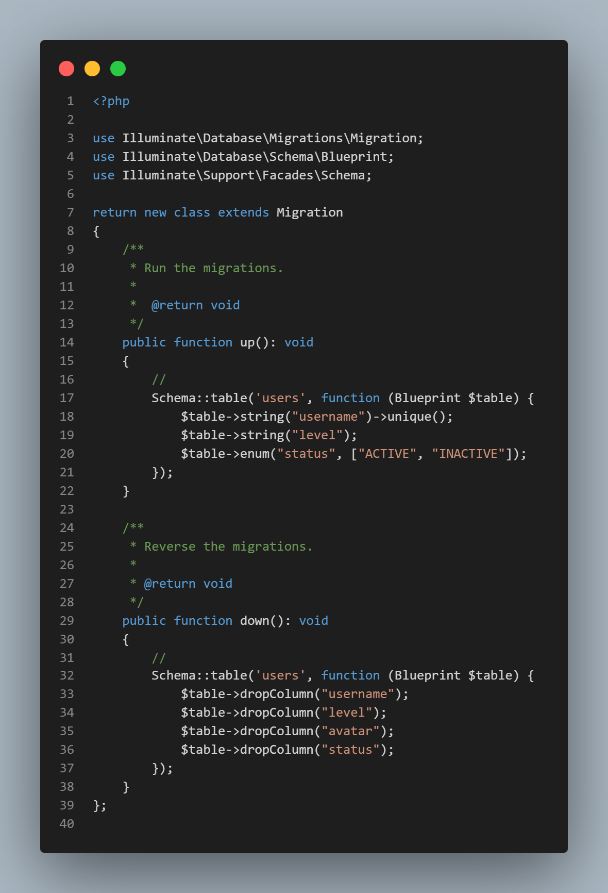
Setelah itu jalankan perintah php artisan migrate pada terminal. Jika berhasil maka struktur tabel userstelah berubah sesuai dengan kebutuhan aplikasi

Setelah berhasil melakukan costum table users selanjutnya membuat user menggunakan fitur seeding pada Laravel, buat seeder dengan nama AdminSeeder dengan perintah:
php artisan make:seeder AdminSeeder
Setelah itu buka folder database/seeders/, kemudian buka file yang bernama AdminSeeder.php dan isikan dengan kode program berikut.
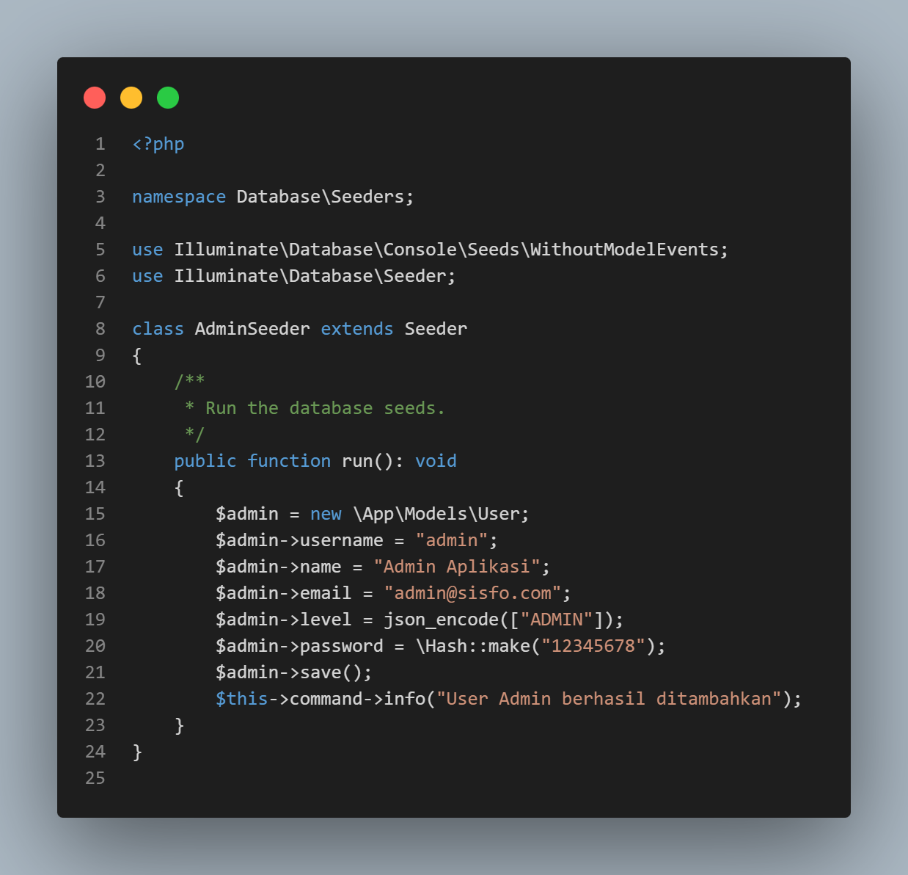
Setelah itu jalankan perintah berikut pada terminal untuk menjalankan seeder.
php artisan db:seed --class=AdminSeeder
Jika berhasil maka akan tampil seperti gambar berikut.

Setelah berhasil menambahkan user maka dapat login ke aplikasi menggunakan akun tersebut yaitu admin dengan email admin@sisfo.com dan password 12345678.

Authentication Laravel secara otomatis mengenerate tampilan dashboard aplikasi, Langkah selanjutnya kita akan konfigurasi tampilan aplikasi sesuai dengan template yang kita pilih, pada studi kasus ini kita akan menggunakan template SB Admin 2 dengan framework bootstrap, silahkan download template pada link https://startbootstrap.com/theme/sb-admin-2 kemudian ekstrak.

Selanjutnya buat folder pada public project Laravel dengan nama sbadmin dan copy paste kan seluruh asset template sbadmin kedalam folder tersebut

Setelah seluruh aset template berhasil di copy paste, langkah selanjutnya adalah membuat layout blade untuk mengatur tampilan aplikasi, buat file dengan nama app.blade.php pada folder resources/views/layouts/ dan isikan dengan kode program berikut.
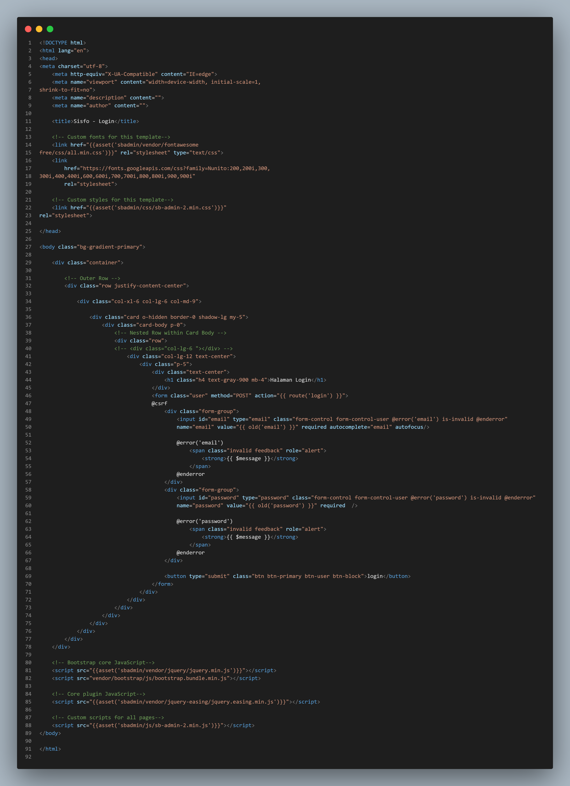
Akses 127.0.0.1:8000/login, maka tampilan login akan berubah seperti gambar berikut ini.

Selanjutnya membuat layout global yang mana layout ini akan digunakan sebagai layout utama aplikasi dan view-view lain akan mengambil resource disini, karena app.blade.php sudah digunakan untuk view login, maka kita perlu membuat layout baru, silahkan buat file dengan nama main.blade.php pada folder resources/views/layouts/ dan isikan dengan kode program berikut.
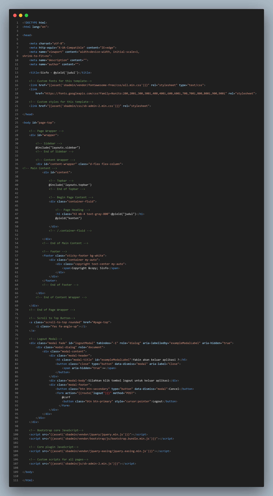
Pada layouts main.blade.php diatas layout ini akan memanggil view sidebar.blade.php dan view topbar.blade.php kedalam layout main.blade.php dengan menggunakan perintah @include sehingga tampilan kedua view tersebut akan tampil pada layout main. Selanjutnya juga akan menampilkan data judul dan konten dari view yang akan menggunakan layouts main.blade.php dengan perintah @yield(‘judul’)dan @yield(‘konten'). Dengan begitu setiap view yang menggunakan layout main.blade.php dapat mengisi data judul dan konten sesuai dengan kebutuhan aplikasi.
Buat file pada folder layouts dengan nama sidebar.blade.php dan isi dengan kode program berikut.
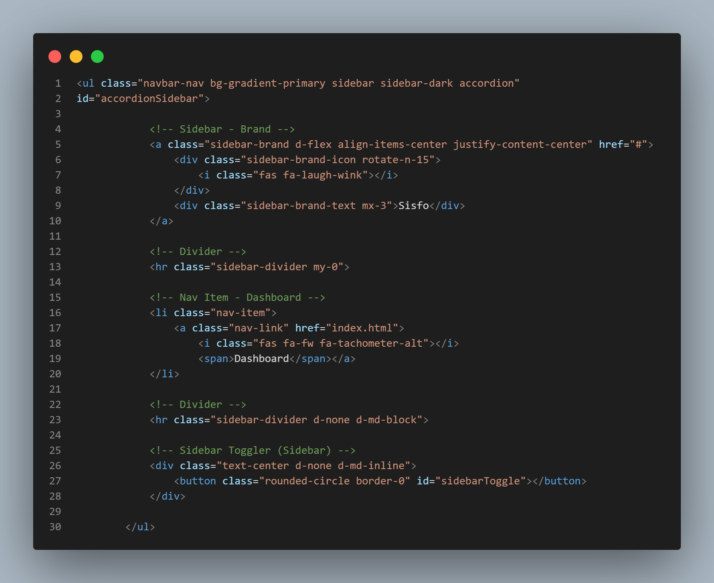
Buat file pada folder layouts dengan nama topbar.blade.php dan isi dengan kode program berikut.
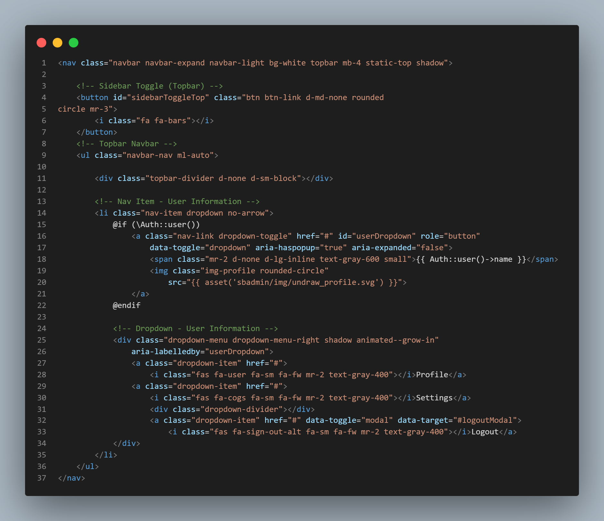
Sebagai contoh kita akan menggunakan view home.blade.php, buka file tersebut dan isikan dengan kode program berikut.

Untuk menggunakan layouts main menggunakan @extends(‘layouts.main’) sehingga seluruh tampilan main.blade.php akan ditampilkan pada view home, untuk menampilkan data judul pada layout main dengan perintah @section(‘judul’)Dashboard @endsection dan konten dengan cara @section(‘judul’)Dashboard @endsection. Dengan begitu maka tampilan halaman home akan seperti gambar berikut.

Selanjutnya membuat fitur manajemen users, kita akan menggunakan fungsi keseluruhan CRUD maka kita akan buat controller resource , buka terminal kemudian ketikkan perintah berikut.
php artisan make:controller UserController --resource
Setelah itu buka file UserController.php yang berada pada folder app/Http/Controllers/ dan isikan dengan kode program berikut.
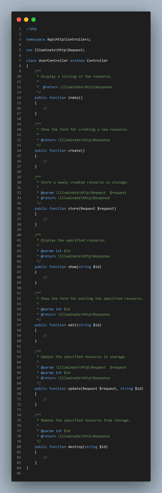
Selanjutkan tambahkan kode program berikut pada route web.

Sehingga jika dilihat pemetaan route php artisan route:list menjadi seperti gambar di bawah ini.
 Create Users
Create Users
Route untuk menampilkan view form tambah data users adalah users/create, buka file UserController kemudian pada action create edit kode program menjadi seperti berikut.
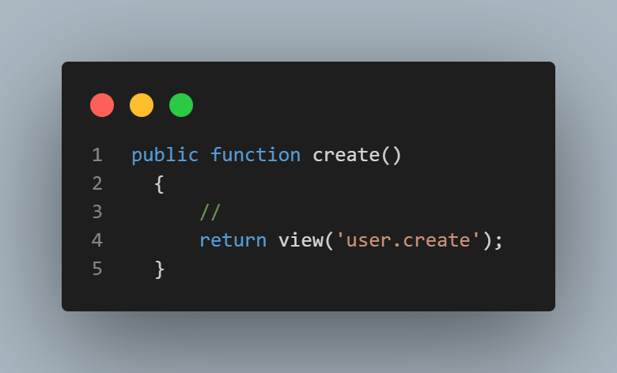
Perintah return view('users.create'); artinya menampilkan view create pada folder user. Selanjutnya buat file dengan nama create.blade.php pada folder resources/views/users/ dan isikan dengan kode program berikut.
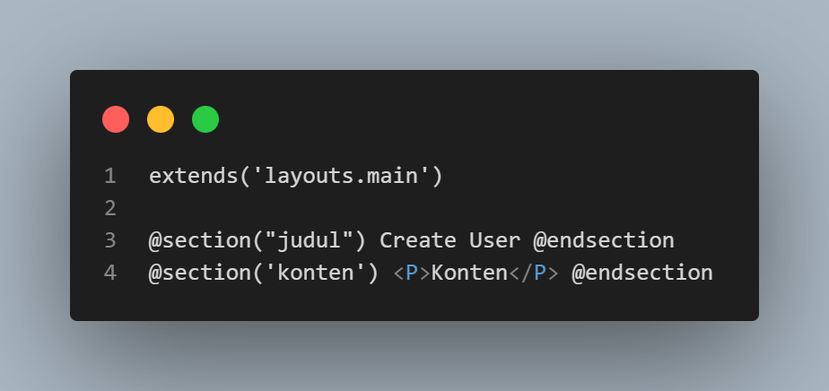
Selanjutnya tambahkan file css dan javascript select2 kedalam layout main.blade.php
link href=https://cdn.jsdelivr.net/npm/select2@4.1.0-rc.0/dist/css/select2.min.css rel="stylesheet" / script src="https://cdn.jsdelivr.net/npm/select2@4.1.0-rc.0/dist/js/select2.min.js"


Selanjutnya membuat form inputan create user, silahkan edit user/create.blade.php menjadi seperti kode program berikut.
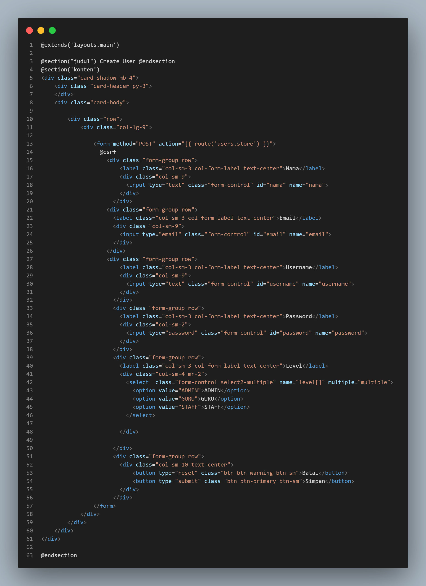
Sehingga tampilan form inputan user menjadi seperti gambar dibawah ini.

Selanjutnya buka action store pada UserController kemudian isikan kode program berikut.
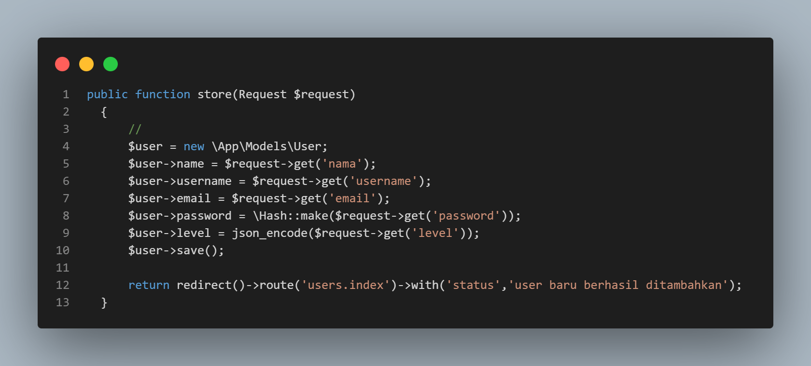
Form create user menggunakan method POST yang akan dikirimkan ke action store dengan route users.store, selanjutnya pada action store akan ditangkap isi form create user dengan cara $request->get('nama input') kemudian disimpan pada table user dengan cara instance model User dengan cara $user = new \App\Models\User setelah itu assign sesuai dengan nama field. Untuk menyimpan kedalam database User menggunakan perintah $user->save, jika data berhasil disimpan akan di redirect ke route users.index dengan mebawa session status.
Read UsersSelanjutnya setelah fungsi create selesai kita akan menampilkan data user, untuk menampilkan data user kita akan menggunakan method GET yaitu http://localhost/users yang mana route ini merupakan action index pada UserController, buka action index kemudian edit menjadi seperti kode program berikut.
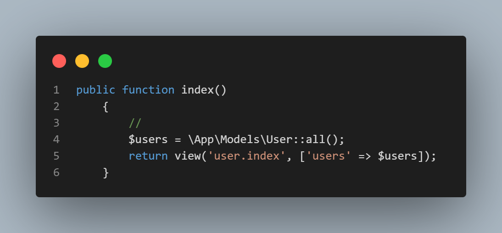
Selanjutnya buat file dengan nama index.blade.php pada folder resources/views/users/ dan isikan dengan kode program berikut.
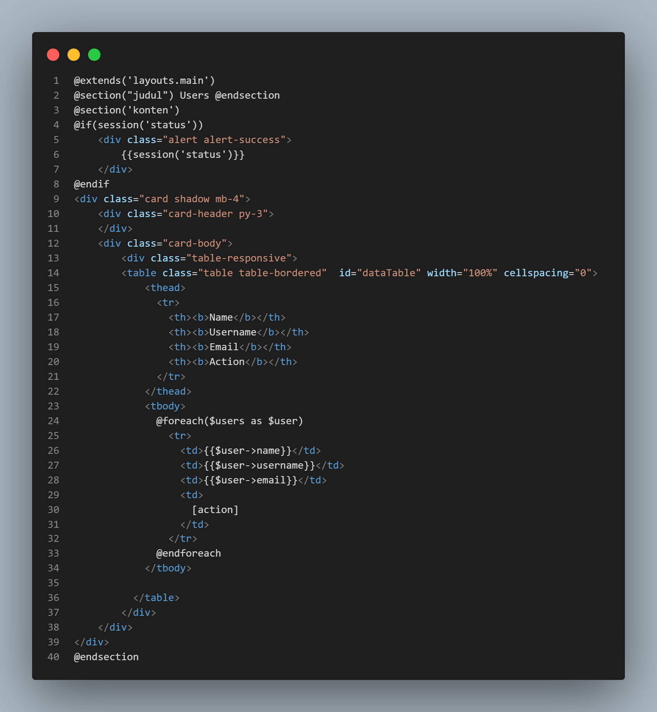
Karena menggunakan datatables tambahkan file css datatable berikut pada bagian head main.blade.php dan file js datatables pada bagian bawah main.blade.php.
link href="{{ asset('sbadmin/vendor/datatables/dataTables.bootstrap4.min.css') }}" rel="stylesheet"
script src="{{ asset('sbadmin/vendor/datatables/jquery.dataTables.min.js') }}" /script
script src="{{ asset('sbadmin/vendor/datatables/dataTables.bootstrap4.min.js') }}" /script
script src="{{ asset('sbadmin/js/demo/datatables-demo.js ') }}" /script


Selanjutnya menambahkan button untuk membuka form tambah user seperti kode program berikut.

Sehingga tampilan list user menjadi seperti gambar berikut.
 Update Users
Update Users
Selanjutnya untuk melakukan proses update data user terlebih dahulu kita buatkan tombol action yang mengarahkan pada route users/edit/{user}/edit atau action edit pada UserController untuk menampilkan form dan menggunakan route users/edit/{user} untuk method PUT. Pertama-tama kita akan membuat tombol edit pada tampilan list user, silahkan buka file user/index.blade.php pada kolom [action] ganti dengan kode berikut ini.
a href="{{ route('users.edit', $user->id) }}" class="btn btn-sm btn-primary">Edit /a


Jika salah satu tombol diatas diklik maka akan menghasilkan string url http://localhost/users/{user}/edit yang mana {user} merupakan id dari user yang di klik.
Selanjutnya buka action edit pada UserController kemudian edit kode program menjadi seperti berikut.
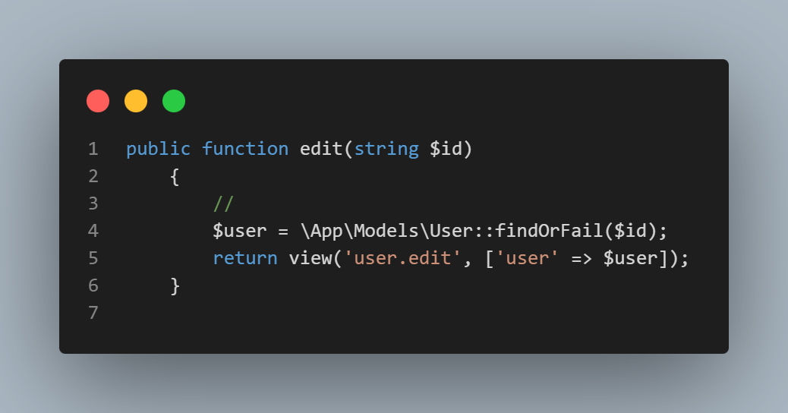
Kode diatas akan mengambil data user berdasarkan id user yang diidapatkan dan ditampung pada variable $user dan dikrimkan ke view user.edit, selanjutnya buat file dengan nama edit.blade.php pada folder resources/views/user/ dan isikan dengan kode program berikut.
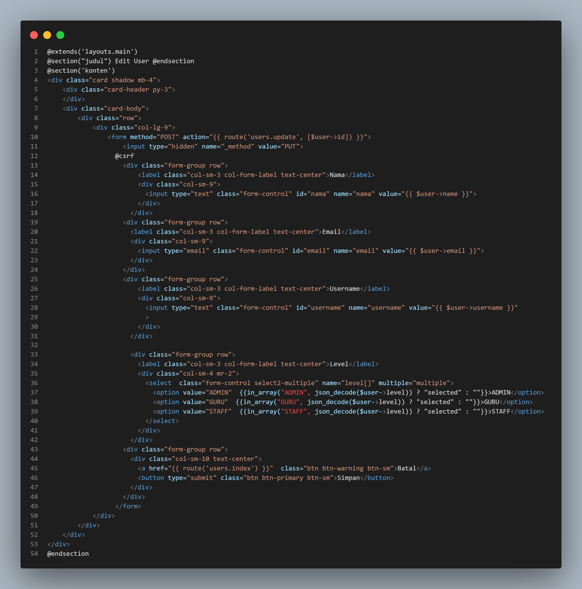
Sehingga tampilan form edit user menjadi seperti gambar berikut ini.

Selanjutnya buka action update pada UserController kemudian isikan kode program berikut.
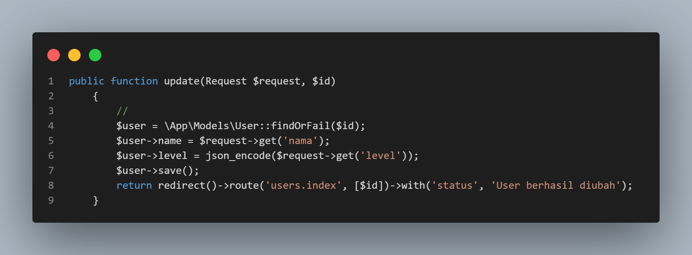
Selanjutnya kita akan mencoba melakukan perubahan data user seperti gambar dibawah ini.

Sesuai gambar diatas kita akan mengubah nama user menjadi Messi the GOAT seperti gambar berikut.

Setelah diganti nama user tersebut klik simpan, jika berhasil maka akan diredirect ke halaman users dengan menampilkan alert success seperti gambar berikut.
 Delete Users
Delete Users
Selanjutnya untuk melakukan proses delete data user terlebih dahulu kita buatkan tombol action yang mengarahkan pada route users/{user} untuk method DELETE. Pertama-tama kita akan membuat tombol delete pada tampilan list user, silahkan buka file user/index.blade.php dan tambahkan kode program berikut dibawah link edit.

Selanjutnya buka action destroy pada UserController dan isikan dengan kode program berikut ini.
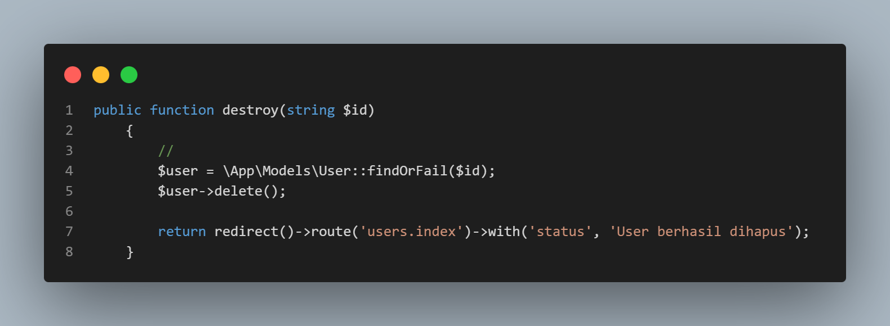
Saat diklik salah satu tombol hapus maka akan muncul pop up dialog peringatan apakah data akan dihapus seperti gambar dibawah ini.

Jika tombol oke diklik maka data akan dihapus, jika data berhasil dihapus maka akan muncul pesan seperti gambar berikut.
 Menambahkan Menu Users
Menambahkan Menu Users
Selanjutnya kita akan menambahkan menu users pada sidebar, buka file view/layouts/sidebar.blade.php kemudian tambahkan kode program berikut.

Sehingga pada aplikasi akan muncul menu users seperti gambar berikut ini.


D. Kesimpulan
Dari praktikum ini, dapat disimpulkan bahwa:
- Penerapan package laravel/ui yang terintegrasi dengan Bootstrap sangat mempermudah dan mempercepat proses pembuatan halaman login, register, beserta logika otentikasinya karena file pendukung (controller, view, route) di generate secara otomatis.
- Penggunaan Migration memberikan fleksibilitas tinggi dalam memodifikasi tabel database sesuai kebutuhan aplikasi (seperti tabel users kustom), dan fitur Seeder sangat berguna untuk menyiapkan user bawaan sebelum aplikasi digunakan.
- Konsep Blade Templating membuat pengelolaan antarmuka menjadi sangat rapi dan modular. Template pihak ketiga seperti SB Admin 2 dapat dengan mudah diimplementasikan dengan memecah layout global (sidebar, topbar, konten utama) dan memanggilnya sesuai kebutuhan antarmuka.
- Fitur Resource Controller sangat mengefisienkan proses pembuatan sistem Manajemen Users. Pengembang tidak perlu mendefinisikan routing secara manual satu per satu untuk menampilkan form, menyimpan data (store), menampilkan tabel (read), mengubah (update), dan menghapus data (delete).